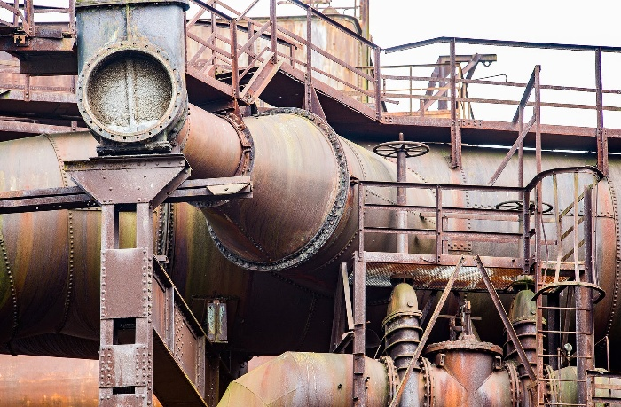
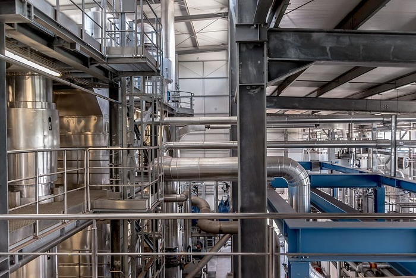

Boilers are vital to every home. Whether you're heating a home, a business, or just using a heater to save money, boilers are required to meet environmental regulations. Boilers are also the most important piece of equipment in any boiler room, since they're responsible for heating up water. This can limit the amount of heat you're able to produce.
Think about that, the boiler draws in cool air, heats it, and broadcasts it out the stack. A great conducting stack high temperature is beneficial because at higher temperatures, energy burns in the electricity. In the meantime, the boiler system takes in water, heats it to steam, and uses it.
An economizer uses the wasted hot flue gas as a heat source for cooking pot heating on the way to your boiler. Economizers help decrease fuel use and stay clear of the dangerous result of putting the boiler's feed into cold water.
It may be as easy as turning a thermostat lever from one day to the next to lower the stack temperatures. This lowers the operating pressure for steam boilers and the operating temperature for hydronic boilers during light days or at night.

A variable-frequency drive (VFD) lets the system act as the stream controller and fan or pump speed can vary based on the load.
The burner must have air heated by the flame, making steam in the boiler. If you run large boilers around the clock, this can really add to the expenses even if you take gas prices into account. On occasion, air preheaters pay for themselves in less than a year.
Many plants remove the insulation from the valves in the boiler room for maintenance and normally do not put it back because it is a hassle. However, opening these large valves to the air leads to a lot of heat loss and can make the boiler room unbearably HOT.
Inspecting your boiler's waterside regularly should be a priority. Scale accumulates on heat transfer surfaces due to high heat buildup, poor chemicals, and failure to blow out the boiler. This scale can impede heat transfer, lessening your boiler's efficiency. The scale will keep the heat from these cooling surfaces. If the gauging system isn't treated for sufficient length, the boiler may overheat, resulting in costly repairs and leaks.
The water is heated and requires significantly less fuel in order to be converted into steam again. The less boiler makeup water, chemicals, and treatment that are required to meet your minimal boiler environmental set point, the more condensate can be reused. Rerouting the condensate back into the feed water system can reduce feeding treatment costs and sewer expenses.

Blowdown can eliminate impurities, such as hardness, from the boiler, but it removes heat from the system, too. If you blow down the boiler when it's on a regular schedule, you can save a lot of power. This also reduces the risk of injury to your boiler because the flow is restricted.
The amount of heat recovered by the water blowdown in the boiler can be as high as the efficiency of a boiler. A blowdown valve is used to eliminate boiler water that contains soluble and insoluble solids so as to reduce the level of dissolved solids in the boiler water and prevent boiler scale. Using heat recovery for the blowdown and for pre-heater make-up water can improve energy efficiency.
The least-expensive way you can save on fuel and electricity is to reduce the steam flow in your processes. Insulating pipes and other items heated by steam, for example, can reduce steam flow, and therefore, fuel usage. High-pressure condensate systems can reduce steam usage at your deaerator AND fuel usage in your boiler.
Boilers are vital to the function of a business, and the best boilers are vital to the success of a business. In order to find the best boiler for your business, take the time to thoroughly research the features, benefits and pricing of each option before making your decision.